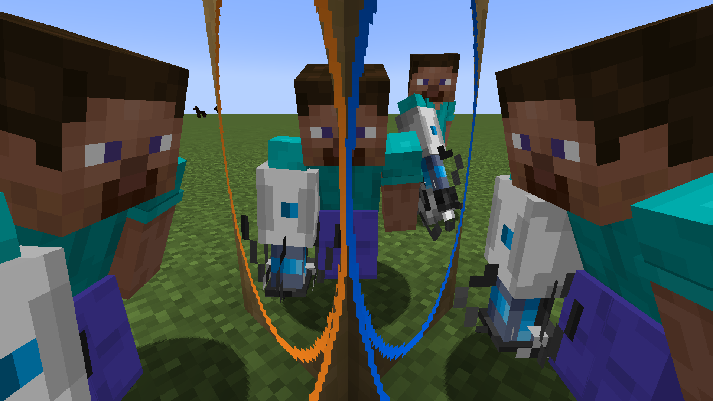

Перенеситесь в мир Portal 2 с нашим модом для Minecraft!
Скачать модЭтот мод для Minecraft 1.20.1 привнесёт элементы из вселенной Portal 2 в вашу игру! Новый интерфейс, порталы, механизмы и блоки — всё для создания уникальных приключений.
Нажмите кнопку, чтобы скачать последнюю версию мода.
Скачать Forge Скачать FabricЕсли у вас есть вопросы или предложения, свяжитесь с нами: